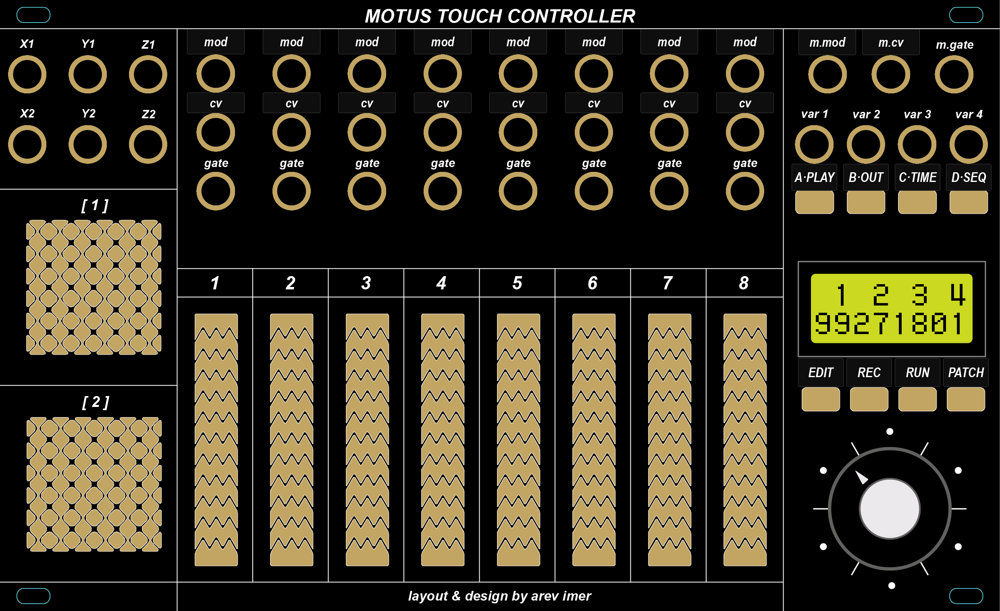

Motus: voltages from fingers
Eight touch sliders, two XY pads, a four-row step sequencer, LFOs, quantizers and loop recording, played by finger and set up on an 8×2 character display.

Overview
Motus turns finger position and pressure into control voltages and gates for a modular system. Every touch surface reads position and pressure; a finger can rest, slide, press harder or jump with a second finger. All voltage outputs span about 0–8.2 V and are calibrated, so notes are in tune at 1 V/octave.
Outputs
| Section | Jacks | What comes out |
|---|---|---|
| Sliders 1–8 | cv mod gate | the slider's output (a voltage, a note or an LFO); a second output chosen with MOD (an envelope, the LFO 90° ahead, the cv mirrored, or the finger's pressure; see MOD); and a gate or trigger. The output holds its value after you lift. |
| XY pads 1–2 | X1 Y1 Z1 X2 Y2 Z2 | the finger's position on the pad, and its pressure (Z); or a Lorenz or Rössler attractor that the finger pulls on. |
| Master | m.cv m.mod m.gate | the average cv and mod of all sliders that are touched, looping, running an LFO or delayed (m.mod also of envelopes still falling), so it always stays in range; it holds when none are. The gate is on while any slider gate is on, or gives the sequencer's step trigger while any row runs. |
| Sequencer | var 1–4 | the four rows A–D of the step sequencer. |
Controls
| Control | Main use |
|---|---|
| A·PLAY B·OUT C·TIME D·SEQ | tap: that settings page · double tap: start or stop sequencer row A–D · hold: the row's step view |
| EDIT | hold and turn: change a value · tap: toggle fine encoder steps (± on the display), until the menu closes |
| REC | record and loop slider or pad movements |
| RUN | tap: start or stop all rows · hold: the SYS settings |
| PATCH | tap: load one of four slots, or a template for a fresh start · hold: save |
| Encoder | scroll, step the sequence by hand, edit values |
On the screen, the sequencer rows are called A–D (A and the var 1 jack above it are row A) and the sliders #1–#8, by their number on the panel.
The buttons and jacks were relabelled after the first panel print with 6 mm tape strips (see docs/labels/): A·PLAY–D·SEQ were SET 1–SET 4, EDIT, REC, RUN, PATCH were FINE, HOLD, LOAD, SAVE, and the jacks cv, mod, m.cv, m.mod were position, force, m.pos, m.force.
Getting started
Keep your fingers off the touch surfaces while switching on. Motus measures the untouched level of every electrode at start-up. It then shows MOTUS and the slot it loaded, and opens the idle screen.
For a quick start, load a template: tap PATCH, turn the encoder past the four slots to INIT?, pick faders, lfos, keys or split and tap PATCH again. Hold PATCH to save (see Saving and loading).
Playing
Sliders
Each slider follows your finger smoothly from bottom to top. Slow movements are smoothed, fast ones stay fast, and a resting finger can wobble a little without moving the output. When you lift, the value from just before lifting is kept, so the output does not drift as the finger leaves. Pressing harder raises the pressure (on mod when MOD is press, and the envelope's height with VEL); the position is compensated, so it stays nearly where it is.
The LEDs under a slider show what its cv jack puts out, after TIME, so a slew, an echo or a frozen loop can be seen: a bar, a dot at the note when it is quantized, or the moving waveform when it runs an LFO. The display shows what the finger plays.
Two fingers
Put a second finger on a slider or pad and the value jumps to it; lift it and the value jumps back. Lift the first finger instead and the value stays with the second, without the touch ending. Use it for square-wave modulation or to jump to a new value mid-gesture. The fingers need about one electrode of space between them.
XY pads
The pads output X, Y and pressure (Z). Their LEDs glow around the finger. Pads can be recorded and looped like sliders. A pad can also run a chaotic attractor that moves on its own and that the finger pulls on (see XY pad settings).
The display while playing
Touching a control shows its value: a voltage, a note, an LFO rate or depth on a slider, X and Y on a pad. Without a touch, the idle screen shows the sequencer.
On the idle screen, RUN or STOP is followed by the tempo, or by the slider that clocks the sequencer (#3). While running, the second line has a tube per row A–D: one pixel row per step, as tall as the row's length, and filled up to its current step; a stopped row's tube stays empty. When everything is stopped, it shows the current slot. A dot means recording, * means unsaved changes.
Slider settings tap A, B, C
Every slider works in one of two modes, chosen with LFO at the top of its PLAY page:
LFO off · SLIDE
The finger sets the output. Without a quantizer it works like a fader; with one it plays the notes of a scale, like a keyboard strip, and sweeping it plays an arpeggio.
LFO on
The output runs an LFO that keeps running after you lift. The finger sets its rate, or with SETS set to depth, how far it swings.
A slider's settings sit on three pages: PLAY (A) how the finger plays it, OUT (B) its range and quantizer, and TIME (C) what happens to the output over time afterwards. Both modes share the same language for their range: BASE is where the output starts (the bottom of the slider, or the LFO's low point) and RANGE how far it goes. A negative RANGE inverts the slider or the LFO.
PLAY tap A
| Setting | Mode | Values |
|---|---|---|
| LFO | both | off (SLIDE) or on |
| PLAY | SLIDE | slide: the output follows the finger · touch: set where the finger lands; a second finger sets a new value |
| GATE | SLIDE | gate while touched · retrig: a short drop on every new note · trig: a trigger on touch and every new note |
| SHAPE | LFO | sine and triangle start halfway and rise, ramp rises from BASE, saw falls to it, square starts high, S&H holds a new random level every cycle |
| SETS | LFO | what the slider sets: rate · depth: from none at the bottom to the full BASE–RANGE swing at the top (the screen shows it in %), and FREQ sets the rate |
| RATE | LFO | slow 0.02–1 Hz, mid 0.2–5 Hz, fast 1–25 Hz along the slider; or sync: 4 bars … 1/32 at the sequencer tempo, restarting in phase when the sequencer starts |
| FREQ | LFO | with SETS depth: the rate within the RATE range, or the sync division |
| PHASE | LFO | 0–345° in 15° steps: an offset of the cycle; the gate, triggers and LEDs follow it |
| DEPTH | LFO | fixed, or set by pressure (and held when you lift); with SETS depth, on top of the slider's depth |
| RESET | LFO | free running, or restart the cycle on touch |
| GATE | LFO | while touched · cycle: high for the first half of every cycle (a clock) · trig: at every cycle start · note: on every new quantized note |
OUT tap B
| Setting | Values |
|---|---|
| QUANT | off, or a scale at 1 V/octave: chromatic, major, minor, major and minor pentatonic, dorian, harmonic minor, blues, whole tone |
| ROOT | the key of the scale |
| BASE | the start of the range in volts, with the note name when quantized |
| RANGE | the size of the range: volts, or semitones when quantized (24 st = two octaves); negative inverts |
| MOD | what the mod jack puts out (below). SLIDE: env (default), inv, press · LFO: quad (default), env, inv, press |
| LEN | env: the whole envelope, 1 ms – 20 s (400 ms to start with) |
| RISE | env: the rise's share of LEN, 0–100 % (10 %); the rest is the fall |
| CURVE | env: log 100 % … linear … exp 100 % (exp 50 %). Exponential rises start slowly; exponential falls drop fast and tail off |
| HOLD | env, SLIDE: on (default): it waits at the top while the finger stays down · off: it runs through |
| VEL | env, SLIDE: on (default): how firmly the touch lands sets how high it goes · off: always to the top |
MOD the mod jack
The second jack of every slider (force on the original panel print) puts out one of four things, 0–8 V:
env
An envelope after the PEAK modulator of the GRM Ateliers. In SLIDE it starts when the finger lands, and again on every new note when GATE is retrig or trig, rising from wherever it is, so it never clicks back to 0. In LFO mode it starts every cycle, as high as the LFO's depth.
quad
LFO only: the same LFO a quarter cycle ahead, with the same range, depth and quantizer. With the cv it draws a circle, or plays a second voice.
inv
The cv after TIME, mirrored within BASE and RANGE: when the cv is at the top, mod is at the bottom.
press
The finger's pressure, as the force jack always did.
TIME tap C
A CV processor after the mode, after the CONTROL modulator of the GRM Ateliers, in both modes: the output (the finger's value, or the LFO) runs through a delay line with feedback, then a slew. Only the cv is processed; gate and mod stay live. With DELAY and SLEW off the output passes straight through.
| Setting | Values |
|---|---|
| SLEW | a glide between values, off to 10 s; it keeps gliding after you lift. On an LFO it rounds off square and S&H steps (smooth random) |
| SLANT | −100 … +100 %: rise against fall. Positive: slower rises (up to twice SLEW), faster falls (instant at +100 %); negative the other way round |
| DELAY | off to 8 s: the output repeats the input this much later |
| LOOP | 0–100 %: how much of the delayed output is fed back; low values give fading echoes, 100 % loops the last DELAY endlessly |
| FREEZE | off · lift: while untouched, the last DELAY loops (play a gesture, let go, it repeats until the next touch) · touch: it loops while touched |
A quantized slider is quantized again after the line, so echoes and loops stay in the scale. A slider with a DELAY joins the master outputs like an LFO.
Steps when editing: BASE and RANGE move by octaves when quantized (semitones with fine steps on), otherwise by 1 V (0.1 V with fine steps on). Small steps go four times further when you turn fast. Changes reach a held output at once.
Gates and triggers: triggers are short pulses (TRIG LEN in the SYS settings, 2 ms by default), at least 10 ms apart, so one touch never fires twice.
XY pad settings select a pad, tap A
Touch a pad to select it, or with PLAY open hold A and turn past slider 8 to P1 and P2. Its settings are on PLAY (P1 MODE over lorenz); OUT and TIME have nothing for a pad and say on PLAY.
| Setting | Values |
|---|---|
| MODE | xy: X, Y and Z follow the finger · lorenz: X and Y draw the butterfly (x against z) and Z is y, swinging around its middle; the trajectory circles one wing and flips to the other at irregular times · rossler: X and Y draw the spiral (x against y) and Z is z, low most of the time with a spike once a loop or so |
| RATE | how fast it runs, in loops per second: 0.010–20 Hz (0.45 Hz to start with) |
| CHAOS | 0–100 %. lorenz: from long spirals with rare flips to frequent, erratic flips (rho 24.8–60) · rossler: from one clean loop through period doubling (about 25 %) to dense chaos; the classic attractor is near 50 % (c 2.5–9) |
While an attractor runs, the finger pulls the trajectory toward itself, and pressure sets how hard: a light touch nudges it, a firmer one bends it toward the finger, and from about half pressure up it is drawn under the finger, pinned at a firm press however fast it runs. Lift, and it flies back onto the attractor from where you left it. The outputs and the pad's LEDs follow the trajectory all the time, touched or not.
The nudge of a light touch is measured against the attractor's own speed, so it feels the same at any RATE. Held far off the attractor, the third output can run to the end of its range (Rössler's Z with the finger to the right); it comes back once you let go. A loop recorded on the pad records the finger, so it keeps pulling on an attractor that never repeats exactly.
Sequencer
A step sequencer in the spirit of the Serge TKB. The eight sliders are eight stages, and every stage holds a value for each of the four rows A–D, which come out on var 1 to var 4. Every row has its own length, start, direction, speed and range, so rows run against each other while all of them follow the same clock. While any row runs, m.gate gives a trigger on every clock step.
Start and stop a row with a double tap on its button A–D, from anywhere; it starts on its first stage and joins the running rows on their next step. A tap on RUN starts all rows together, or stops them all. On the idle screen, the encoder steps the stopped rows by hand.
Step views
Hold A to D to open the step view of row A to D. The sliders' LEDs then show that row: each stage's value where it lies in the row's range. The current step has its top LED lit and shows at full brightness, the rest are dimmed. A step view stays open until you tap a row button.
| In a step view | Result |
|---|---|
| Touch a slider | store where you touched into the row at that stage. Only the row changes: the slider's own outputs, its loop and the running sequence stay as they are. |
| Hold a slider and turn | fine-tune that stage; the finger stops writing for the rest of that touch |
| Encoder | row stopped: step by hand · running: pick the stage shown; its top LED stays lit and dims while the step passes through |
| Hold EDIT and turn | edit the stage on the display: a note when quantized, else a semitone (0.01 V with fine steps on) |
| Hold the row's button and turn | SHIFT: move the row's window (start and end together), wrapping past 8; with EDIT held too: LEN. The stages inside the window light up. |
| Hold the row's button | the row's settings (below); hold again to go back |
| Hold another row's button | switch to that row's view |
| Double tap a row button | start or stop that row |
| Tap a row button | close the view |
Row settings
Every stage holds a position within its row's range, like a slider position: touching a slider stores where you touched it, and the row's BASE, RANGE and QUANT turn that into the output. So these settings reshape the whole row at once, while it plays: turn BASE to transpose a melody, RANGE to widen it or a scale to change its notes.
| Setting | Values |
|---|---|
| DIR | forward, backward, pendulum, random |
| SHIFT | 1–8: the stage the row starts on; it runs its length from there, past 8 back to 1 |
| LEN | 1–8 stages |
| SPEED | /4, /3, /2, x1, x2, x3, x4: steps per clock step. A slow row steps on every 2nd to 4th clock step, a fast one on the clock step and evenly in between; they stay in line with the other rows. |
| QUANT | off, or a scale: the row plays the scale's notes within its range |
| ROOT | the key of that scale |
| BASE | the bottom of the row's range, in volts (with the note name when quantized) |
| RANGE | from BASE to the top: volts, or semitones when quantized; negative inverts |
While DIR, SHIFT or LEN is shown, the LEDs show the row's window. The settings close after 5 seconds without input, back to the step view.
Sequencer settings tap D
| Setting | Values |
|---|---|
| CLOCK | int: the internal tempo · #1–#8: a step on every rising gate of that slider. An LFO slider with a cycle gate becomes a clock you play by finger, a slider with triggers a tap clock, a recorded loop a rhythm. |
| BPM | 20–300 |
| DIV | what one step is: 1/1, 1/2, 1/4, 1/4T, 1/8, 1/8T, 1/16, 1/16T, 1/32. With a slider clock, one pulse is one step and the tempo for synced LFOs and fast rows is measured from it. |
| TOUCH | jump: a touch outside the step views makes every row start at that slider's stage from then on · ignore: play the sliders freely |
Recording
Any slider or pad can record a movement and loop it, up to 20 seconds each, all at the same time. A slider records position, pressure and gate (so a loop plays the envelope too), a pad X, Y and Z, including two-finger jumps, lifts and pauses, so rhythms loop too.
| Action | Result |
|---|---|
| Tap REC | arm recording: a blinking dot on the display, the top LEDs of the sliders blink. Tap again to disarm. |
| Touch a control while armed | recording starts; its LEDs blink and the dot stays lit |
| Tap REC while recording | the recording loops; the LEDs flash at every loop start |
| Hold REC (not armed) and touch a control | record it for as long as REC is held; letting go loops it |
| Armed: hold REC and touch a loop | stop that loop; the touch itself plays nothing |
| Armed: keep holding REC | after 0.8 s a bar fills over 1.5 s, then all loops stop; letting go earlier cancels |
Touching a looping control plays live over it while you touch. With a menu open, a touch only selects the slider and its loop keeps playing, so you can change its settings while it loops. A gate held across the loop start drops briefly to retrigger envelopes (LOOP TRG in the SYS settings). Recordings are not kept over power-off.
Saving and loading
Motus keeps four patch slots. A slot holds every slider's and pad's settings, the sequencer's stage values and its settings, including every row's. The SYS settings are global and saved with every save. Slots saved by earlier firmware are not read: after an update that changes what a slot holds, the slots start empty. The unit starts with the slot saved or loaded last.
Autosave (off by default, switch it on in the SYS settings): after 10 seconds without touching anything, changes are saved into the current slot by themselves, and the * disappears. After loading a template, autosave waits until you save or load a slot yourself, so a template never overwrites your slot.
| Action | Result |
|---|---|
| Tap PATCH | LOAD 2?: turn to pick a slot or a template, tap PATCH again to load it |
| Hold PATCH (0.5 s) | SAVE 2?: turn to pick a slot (replace, empty or current), tap PATCH to store. Also from the LOAD prompt. |
| Cancel | a row button or EDIT, or 5 s without input |
Templates
After the four slots, the LOAD prompt offers starting points (INIT?). A template replaces all slider settings (and sets both pads back to xy), clears the sequencer and its values, and starts every slider from the bottom (a fader at its BASE, LFOs from the start of their cycle); your slots are untouched until you save over one.
| Template | Sliders |
|---|---|
| faders | 8 plain faders, 0–8 V |
| lfos | 8 sine LFOs with clock gates, their phases 45° apart |
| keys | 8 quantized keyboards, C major over two octaves from C2; the sequencer rows play the same notes |
| split | sliders 1–4 as keys, 5–8 as LFOs 90° apart |
System settings hold RUN
| Setting | Values |
|---|---|
| SMOOTH | 1 (light) to 10 (heavy): smoothing of slow finger movement; fast moves stay fast |
| DEADBAND | 0–20: how much a resting finger can wobble without moving the output |
| PRESSURE | 50–200 %: how hard counts as a firm press, for pressure (mod, VEL, LFO depth) and Z |
| TOUCH | 50–200 %: touch sensitivity; higher reacts to lighter touches |
| BRIGHT | 10–100 %: LED brightness |
| TRIG LEN | 1–20 ms: the length of triggers |
| LOOP TRG | on or off: a gate held across a loop start drops briefly |
| AUTOSAVE | off (default) or on: save changes into the current slot after 10 s untouched |
Quick reference
| Gesture | Where | Result |
|---|---|---|
| Tap A / B / C / D | anywhere | PLAY, OUT, TIME, SEQ page (tap again: close) |
| Tap a row button | step view, row settings | close, back to the idle screen |
| Double tap A–D | anywhere | start or stop row A–D |
| Hold A–D | anywhere | step view of row A–D |
| Hold the row's button | step view | the row's settings (again: back) |
| Encoder | settings | scroll the settings |
| Hold EDIT + turn | settings | change the value |
| Hold the page's button + turn | PLAY, OUT, TIME | choose the slider (on PLAY past 8: an XY pad) |
| Touch a slider | step view | write into the row |
| Hold a slider + turn | step view | edit that stage |
| Encoder | step view | stopped: step by hand · running: pick a stage |
| Hold EDIT + turn | step view | edit the shown stage |
| Hold the row's button + turn | step view | shift the row (with EDIT: its length) |
| Encoder | idle | step the stopped rows by hand |
| Tap EDIT | anywhere | fine steps on or off |
| Tap RUN | anywhere | start or stop all rows |
| Hold RUN | anywhere | SYS settings (again: close) |
| Tap REC | anywhere | arm, disarm, or close a recording into a loop |
| Hold REC + touch | not armed | record while held |
| Hold REC + touch a loop | armed | stop that loop |
| Keep holding REC | armed | stop all loops |
| Tap PATCH, turn, tap | anywhere | load a slot or a template |
| Hold PATCH, turn, tap | anywhere | save into a slot |
Specifications
| Voltage outputs | 0 to about 8.2 V, 12 bit, calibrated per output; 1 V/octave |
| Gates and triggers | triggers 1–20 ms (2 ms default), at least 10 ms apart |
| Recording | up to 20 s per slider or pad, all at once |
| Patches | 4 slots with optional autosave, plus 4 templates |
| Sequencer | 8 stages × 4 rows, each with its own run, length, direction, speed (/4 to x4), range and scale; 20–300 BPM, divisions 1/1 to 1/32 with triplets |
| LFO rates | 0.02–25 Hz, or tempo synced from 4 bars to 1/32 |